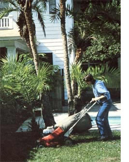

The jobs that are tackled by a lawn service crew can be many and varied. The work that you'll be able to undertake will be determined both by your experience and by the amount of equipment that you can afford to purchase.